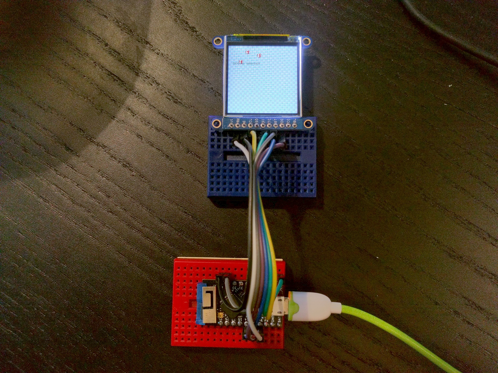

Tinypico Play Shield¶
Published on 2020-12-18 in Stage, a Tile and Sprite Engine.
After watching Unexpected Maker’s stream on which he builds his Play Shield for Tinypico, I decided to try and see if the Stage library would run on it.
I asked him about which display he uses and how it is connected, and made this “driver” for it:
import ustruct
import utime
class Display(object): # ST7739
_BUF = bytearray(4)
width = 240
height = 240
def __init__(self, spi, dc, cs=None, rst=None):
self.spi = spi
self.dc = dc
self.cs = cs or (lambda x: x)
self.rst = rst or (lambda x: x)
self.reset()
def reset(self):
self.rst(0)
utime.sleep_ms(50)
self.rst(1)
utime.sleep_ms(50)
self.cs(0)
for command, data in (
# (b'\x01', None), # reset
(b'\x11', None), # wake
(b'\x3a', b'\x55'), # format
(b'\x36', b'\xc8'), # mad
(b'\x21', None), # invert
(b'\x13', None), # no partial
(b'\x29', None), # on
):
self.write(command, data)
utime.sleep_ms(150)
self.cs(1)
utime.sleep_ms(50)
def write(self, command=None, data=None):
if command is not None:
self.dc(0)
self.spi.write(command)
if data:
self.dc(1)
self.spi.write(data)
def block(self, x0, y0, x1, y1):
y0 += 80
y1 += 80
ustruct.pack_into('>HH', self._BUF, 0, x0, x1)
self.write(b'\x2a', self._BUF)
ustruct.pack_into('>HH', self._BUF, 0, y0, y1)
self.write(b'\x2b', self._BUF)
self.write(b'\x2c')
self.dc(1)
def clear(self, color=0x00):
self.cs(0)
self.block(0, 0, self.width, self.height)
chunks, rest = divmod(self.width * self.height, 512)
pixel = ustruct.pack('>H', color)
if chunks:
data = pixel * 512
for count in range(chunks):
self.spi.write(data)
if rest:
self.spi.write(pixel * rest)
self.cs(1)
def __enter__(self):
self.cs(0)
return self
def __exit__(self, exc_type, exc_val, exc_tb):
self.cs(1)
One surprising thing that took me a while to figure out is that to get correct colors, you have to put the display in inverted color mode — a bit weird, but I guess it’s a question of how the actual LCD is connected to the chip inside. A quick test confirms that it works:
Next I needed to handle the buttons. The Play Shield uses MPR121 chip to handle them, so I just added this button-handling class:
class Buttons: # mpr121
def __init__(self, i2c, address=0x5a):
self._i2c = i2c
self._address = address
for register, value in (
(0x80, b'\x63'), # reset
(0x53, b'\x00'), # stop mode, reset config
(0x2b, b'\x01\x01\x0e\x00\x01\x05\x01\x00\x00\x00\x00'),
(0x5b, b'\x00\x10\x20'), # debounce, config1, config2
(0x53, b'\x8f'), # exit stop mode
):
self._i2c.writeto_mem(self._address, register, value)
def _get_pressed(self):
return int.from_bytes(
self._i2c.readfrom_mem(self._address, 0x00, 2), 'big')
Not having an MPR121 chip at hand, I couldn’t test it, but once I sent the compiled binaries and some example code to Unexpected Maker to test on the actual shield, it ran correctly, as he shows on Twitter: https://twitter.com/unexpectedmaker/status/1339756136224890880
Well, OK, that demo doesn’t actually use the buttons, but it initializes the chip, and that seems to have worked.
I can do further refining once I get my hands on the actual shield.
The full code and compiling instructions are at https://github.com/python-ugame/micropython- stage/tree/master/tinypicost7789